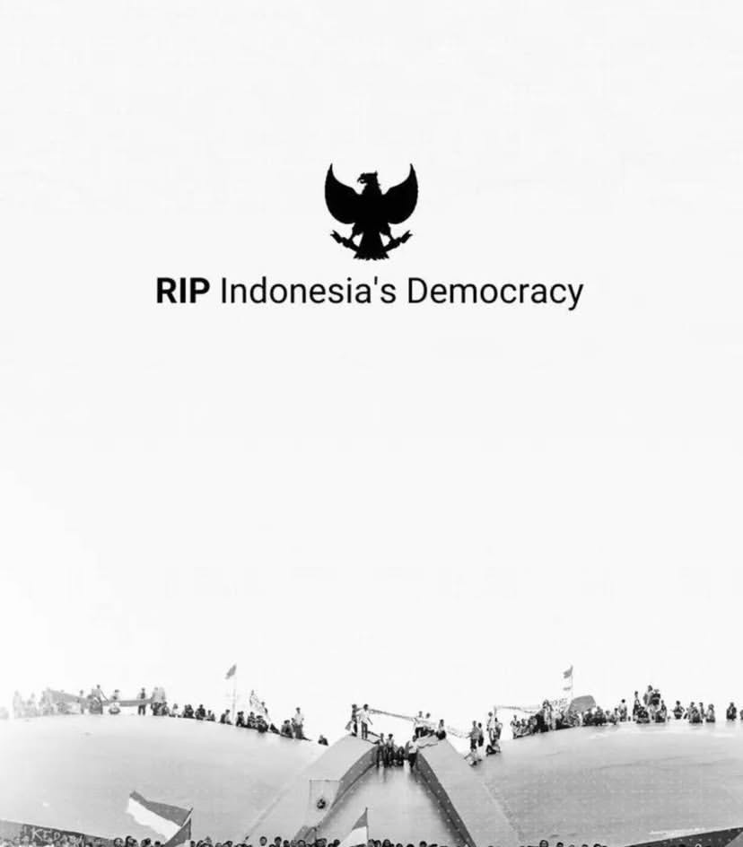

The Fallout

Not even 1 year in, the country is in shambles. The economy is in ruins, the currency is worthless, and the people are starving. The once proud nation is now a shadow of its former self.
That is, if it even had a future to begin with. Inherent greed had been found since the age of empires, and it was only a matter of time before it would consume the nation. You think those rulers did not
sold their people out to foreign powers for their own gain? You think they cared about the people? No, they only cared about themselves and their own power. And now, we are paying the price for their greed.
Though we must look at ourselves too. We allowed this to happen. We voted for these leaders, we supported them, we turned a blind eye to their corruption. We are complicit in our own downfall.
Celebrities who act all cute and funny and then act arrogant when their stomachs are full. People with power who bribed and gave to the poor suspiciously. We are products of our own environment. We are the sum of our choices. And we chose poorly. As if there were any good choices to begin with.
This is a manifesto, a call for help. We must rise up and take back our country. We must demand better from our leaders. We must hold them accountable for their actions.
May God give us strength to presevere through these dark times. And may he give a just retribution to the leaders who wronged their people. Vivamus, moriandum est.
Ingat! Nyawa harus dibayar dengan nyawa! An eye for an eye!